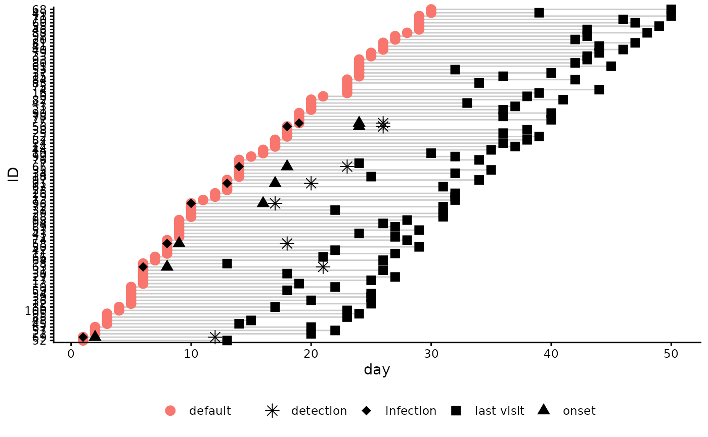

Simulate follow-up for contact tracing data
sim_followup.RdThis function adds simulated follow-up to a ctdata object as generated by
make_ctdata() or simulated via sim_ctdata(). The function simulates
follow-up for each individual in the ctdata object, based on the specified
follow-up time and the probability of being followed up. The function returns
a modified ctdata object with the simulated follow-up data added.
Usage
sim_followup(
x,
time = 1,
delay = 1,
duration = 21,
coverage = 0,
strategy = c("random", "geo_random", "ctscore", "geo_ctscore")
)Arguments
- x
a
ctdataobject- time
an
integerindicating the number of days to run the simulation for; starts from the most recent date inx, be it in follow-up history or in exposures; defaults to 1 day- delay
an
integerthe minimum delay for follow-up to start, after the first exposure of the concerned contact; defaults to 1 - visit can start the day after the first exposure- duration
an
integerindicating the number of days after the last exposure a contact should be followed for; usually determined according to the incubation time distribution; defaults to 21 days- coverage
the expected proportion of contacts visited at any time step; defaults to 0 - no follow-up
- strategy
a
characterindicating the follow-up strategy to use in the simulations; currently available values are: "random"; see details section for more information
Details
Available follow-up strategies (strategy argument) include:
"random": individuals are visited at random every day of the simulation
"geo_random": locations are prioritized at random every day of the simulation; as many contacts as possible are visited in the first chosen location, then if capacity remains, in the second, third, etc.
"ctscore": individuals are prioritized by highest ctscore every day of the simulation
"geo_ctscore": geographic locations are prioritized according by highest ctscore every day of the simulation; as many contacts as possible are visited in the first chosen location, then if capacity remains, in the second, third, etc.
See also
make_ctdata() to create contact tracing data from existing data,
or sim_ctdata() to simulate them
Examples
sim_ctdata() |>
sim_followup(coverage = 0.2, delay = 7, strategy = "random") |>
plot()
